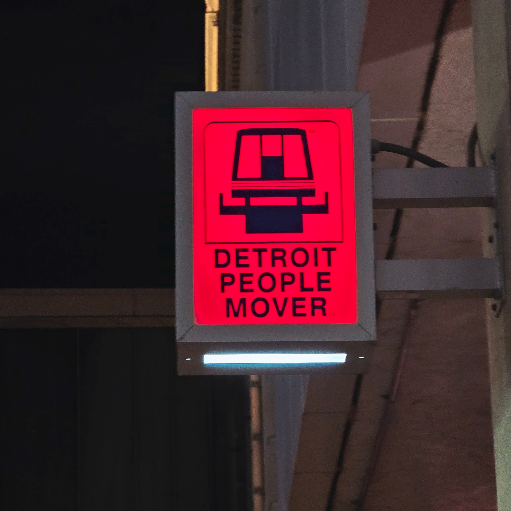

The Detroit People Mover will remain closed through at least Thursday afternoon after transportation officials determined that the foreign object suspected of disrupting service on the downtown elevated rail loop was, in fact, the People Mover itself, sources confirmed this morning.
Crews from the Detroit Transportation Department were dispatched to the elevated guideway shortly before noon following automated reports of an "unidentified obstruction" interfering with the transit system's operations. After a three-hour inspection, investigators concluded that the obstruction and the transit system were one and the same entity.
"We found the debris," said DTD spokesperson Terrence Okafor at a press conference outside the Washington Boulevard station, gesturing vaguely at the entire train. "It's — right there. It's been there since 1987."

The People Mover, which opened in 1987 at a construction cost of $200 million and has spent the subsequent four decades in an operational state of "busted up," serves approximately 2,500 riders on a good day, all of them tourists trying to get to Greektown and one guy named Carl who insists it's faster than walking.
According to the incident report, an automated sensor flagged an "anomalous load-bearing event" at 11:47 a.m. when one of the system's three operating railcars attempted to complete its circuit at full speed — approximately 29 miles per hour — and encountered resistance from a section of track described in the report as "present." Engineers on site initially theorized the cause could be debris, ice buildup, or quote "the spirit of the exhausted infrastructure itself."
Federal Transit Administration guidelines require service suspension any time a foreign object is detected on the guideway. It took officials until approximately 2:15 p.m. to formally rule out the possibility that the People Mover was not a foreign object and was instead a transit system, at which point they ruled it back in.
"Under federal definitions, anything on the track that shouldn't be there constitutes a hazard," Okafor clarified. "We're working with legal to determine whether the People Mover constitutes something that should be there. This is genuinely unresolved."
City Councilmember Deborah Whatley, reached by phone, called the incident "par for the course" and said she had long suspected the People Mover was its own worst enemy. "We've spent thirty years asking who's responsible for this thing," she said. "I think today speaks for itself."
The DTD says it expects to resume partial service once engineers complete a "philosophical assessment" of whether the People Mover's continued existence on its own tracks constitutes a maintenance issue or a policy decision. A public meeting on the matter has been scheduled for a date to be announced at a meeting to be scheduled.
In the meantime, officials are encouraging downtown commuters to consider alternative transit options, including "walking your fat ass there," and "just not going wherever you were going."
The People Mover could not be reached for comment, as it was being pried from the tumble barriers of the main railway following a station reentry that came in a little too hot. There were no injuries since no sports fans were there to ride the People Mover past their car, in order to get to their car.
Editor's Note: An earlier version of this article referred to the People Mover as a "light rail system." The MCM regrets the implication that the People Mover is light. It is heavy. Heavy with regret, debt, and the weight of a failed infrastructure.